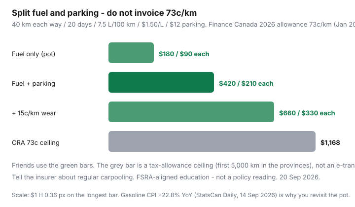

Transportation · Carpool
How to carpool commutes in Canada without messing up insurance or fair cost splits
Would-be carpoolers stall on two awkward sentences: “Are we even allowed to do this on my policy?” and “So… do you e-transfer me $12?” They keep driving alone, burning a litre that Statistics Canada just put 22.8% higher than a year earlier (August 2026 CPI, Daily 14 Sep 2026). A Canadian carpool is a small contract: partners, a split formula, an insurer conversation, and a plan for the Thursday someone is on a Teams offsite. This is that contract — not a brokerage file and not a rideshare side hustle.
Related: broker vs direct, legal rating levers, fuel habits.
Disclosure: Insurance quote tools can be an opportunity type if your usage changes. Saving Optimizer may earn a commission if we later add partner links. We do not currently claim insurer partnerships. This page is comparison education, not a quote, a policy interpretation, or legal advice.
Key takeaways
- Find partners at work, campus, or a corridor app — then write days, pickup, and money in one pinned note.
- Split fuel + parking + a wear slice. CRA’s 2026 provincial allowance of 73¢/km (first 5,000 km; 67¢ after; Finance Canada, Jan 2026) is a ceiling for thinking, not an invoice for your colleague.
- Call your insurer and ask about regular commuting, additional regular drivers, and whether passenger contributions affect the policy. Record the name and date.
- Hybrid weeks break carpools. Write the empty-seat rule before the first WFH Tuesday.
- HOV time can be worth more than $4 of gas. Exit the arrangement in writing if reliability dies.
Finding reliable carpool partners (apps, workplace boards)
Reliability beats a 12% cheaper stranger. Prefer:
- The same employer or campus — shared bad-weather culture, shared holiday calendar.
- Workplace Slack/Teams channels and union or sustainability boards.
- Corridor tools (provincial carpool lot pages, campus matching). Treat public apps like a first date: meet at a park-and-ride, not at your driveway, until the pattern holds.
Trial two weeks before you drop a transit pass. One flake in a snow squall is more expensive than a PRESTO tap.
Cost-split formulas that feel fair
Pick one formula and revisit when the pump jumps — August 2026’s YoY gasoline print is why “we said $8 last year” feels rude.
| Formula | Monthly pot | Each of 2 riders | Feels fair when |
|---|---|---|---|
| Fuel only | 80 km × 20 × 0.075 × $1.50 ≈ $180 | $90 | Driver already had the car; parking is free |
| Fuel + parking | $180 + $240 = $420 | $210 | You share the lot; most city pairs |
| Fuel + parking + 15¢/km wear | $420 + $240 = $660 | $330 | High kilometres, older car, or rotating drivers unevenly |
| CRA 73¢ ceiling (do not charge this) | 1,600 km × $0.73 = $1,168 | $584 | A tax-allowance thought experiment — too high for friends |

Rotate cars if insurance and comfort allow — then each driver is “paid” in days they do not burn their own litres. Interac e-transfer on Friday is less awkward than coins in the cupholder. If one rider only goes three days, they pay 3/5 of the weekly pot, not a guilt rate.
Tell your insurer about regular carpooling — questions to ask
Ontario’s FSRA consumer pages on saving on auto insurance start with honest information. Other provinces have their own regulators. You are not asking for a discount speech. You are asking whether the use is still the use they rated:
- I will carry one or two colleagues on my regular commute, typically n days per week. Does that change rating or require an endorsement?
- They will contribute to fuel and parking. Does any payment rule treat this as a commercial use? (You want a no. If the answer is fuzzy, do not run a paid corridor business on a personal policy.)
- Will they ever drive my car? If yes, add them or confirm occasional-driver wording.
- If I cut annual kilometres because we rotate, how do I report the new band at renewal?
- Please confirm in email. I will keep the date and the name.
Québec’s public/private split (SAAQ + private) is a different conversation — ask the private insurer about the vehicle and the public side about licences. Do not import an Ontario answer onto a Montréal plate.
Pickup logistics and contingency days
- One pickup point with parking (lot, GO station, Tim Hortons that will not tow you).
- A 5-minute grace, then the car leaves. Chronic lateness is how carpools become two cars again.
- Winter bag: scraper, cable, and a transit fallback on the same corridor (the GO train still exists when the Civic does not start).
- No eating in the car unless everyone agrees. You would be amazed how many carpools die over muffins.
Hybrid office weeks that break carpools
If A is in Mon/Wed/Fri and B is in Tue/Thu, you do not have a carpool — you have a coincidence. Align office days in the same hybrid proposal, or accept that two days a week is a pair and the other days are transit. Write: “On a solo office day the driver goes alone; the rider does not owe fuel. If both are home, the pot is $0.” See hybrid negotiation if the employer still forces mismatched days.
When HOV lanes make the time case
Time is the other currency. A legal two- or three-person HOV that saves 15–25 minutes each way on a 400-series or Highway 1 approach can be worth more than the $4 of gasoline you split. Confirm occupant minimums and hours — an empty HOV ticket erases a month of savings. If your corridor has no HOV and parking is free, the case is dollars only; still write the split.
Exit plan if the arrangement fails
Two weeks’ notice in the pinned chat. Settle the pot. Do not ghost on a −20°C morning. Keep a transit or car-share fallback so you are not trapped. If the other person becomes a weekday Uber with your VIN, that is a different product — stop, and tell the insurer if they were listed.
Carpool rule: one formula, one insurer call, one pinned schedule. Money talks are less awkward than a denied claim or a silent passenger who thinks $0 is the split.
Sources & date stamps
- FSRA, “How to save on auto insurance” — honest use and shopping education (Ontario regulator). Not a policy interpretation.
- Finance Canada, 2026 automobile deduction/allowance limits (Jan 2026): 73¢/km first 5,000 km in the provinces; 67¢ thereafter; 77¢ / 71¢ in the territories.
- Statistics Canada, The Daily, 14 Sep 2026 — August gasoline +22.8% YoY; all-items CPI +3.0%.
Frequently asked questions
Do I have to tell my insurer I carpool to work in Canada?
Ask them. Regular commuting, extra regular drivers, and payment that looks like a taxi can all change how a policy is rated or even whether a claim is welcomed. FSRA-style shopping advice starts with honest use. This is not a legal opinion on your policy wording.
What is a fair cost split?
A simple formula: (fuel + parking + a wear slice) ÷ riders, or a flat per-day that you revisit when gasoline jumps. CRA’s 2026 provincial automobile allowance of 73¢/km (first 5,000 km; Finance Canada, Jan 2026) is a strict ceiling, not what you should charge friends.
Does carpooling change my commuting kilometres for insurance?
Sometimes. Some insurers ask for annual kilometres and commuting distance. Sharing the drive can cut your kilometres — if you report the new pattern at renewal. Do not invent a lower band you have not lived.
What happens on hybrid weeks when one person is home?
Write the rule before week two: the driver still goes, the rider pays a smaller empty-seat rate, or you skip and each takes transit. Hybrid is why carpools die. Put it in the chat pinned message.
When do HOV lanes make the time case?
When the lane is legal for your occupant count and actually moves on your corridor (GTA 400-series, Vancouver Highway 1 / 99, etc.). Time saved is part of the split. A two-person HOV that saves 20 minutes each way can beat a cheaper bus that adds an hour.